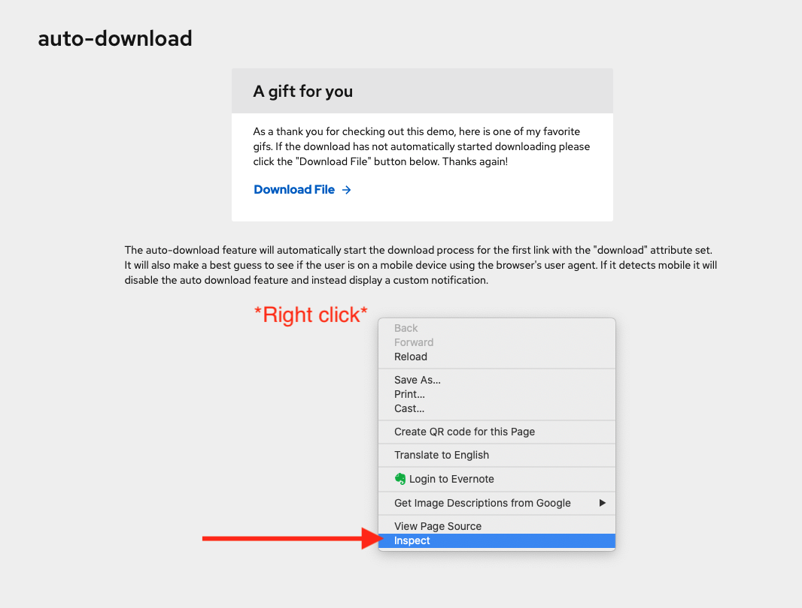
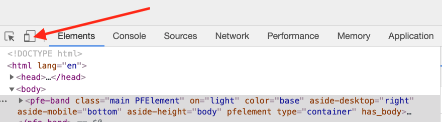
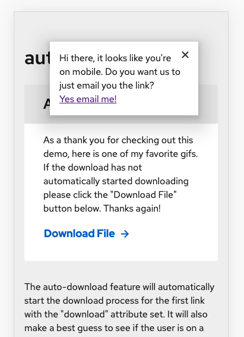

The auto-download feature will automatically start the download process for the first link with the "download" attribute set. It will also make a best guess to see if the user is on a mobile device by using the browser's user agent string. If it detects mobile it will disable the auto download feature and instead display a custom notification.
As a thank you for checking out this demo, here is one of my favorite gifs. If the download has not automatically started downloading please click the "Download File" button below. Thanks again!
Hi there, it looks like you're on mobile. Do you want us to just email you the link?
If you are viewing this demo on a non-mobile device such as a desktop or laptop then a file should have automatically started downloading. If you are visiting from a mobile device you should have received a toast notification that asked if you wanted an email alternative.
The purpose of this demo is to find a reasonable fallback for mobile users. Sometimes the file downloads that we offer don't work on mobile devices. However, we don't want to prevent the user from accessing links if our mobile detection doesn't guess correctly. This is a good progressive enhancement opportunity where we can give mobile users a good experience without denying them access to the file if we make an incorrect assumption on whic device they are currently using.
By using a basic regex on the browser's user agent string. It's traditionally unreliable because it can be easily changed by the user, however, since this is just used to progressively enhance the user experience it should be fine.
get isMobile() {
return (
/Android|webOS|iPhone|iPad|iPod|BlackBerry|IEMobile|Opera Mini/i.test(
navigator.userAgent
)
)
}
1. On a Chrome web browser open the dev tools by right clicking anywhere on the screen and select "Inspect".
2.When dev tools is open click the mobile device emulator icon.
3. You are now in mobile mode. Refresh the page and you will see a little notification asking if you would like the file emailed to you.
{kind=link}